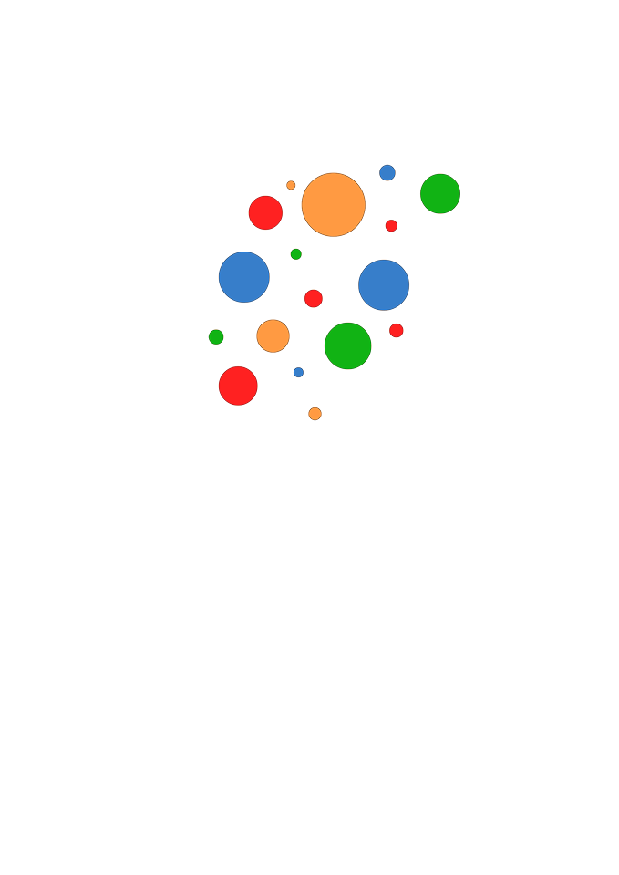
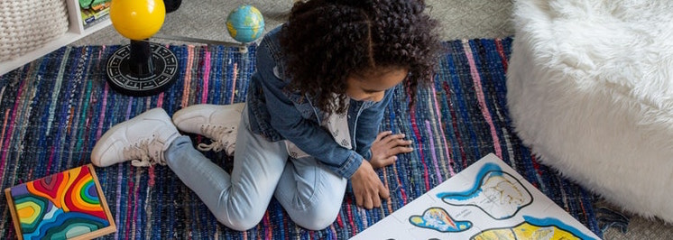
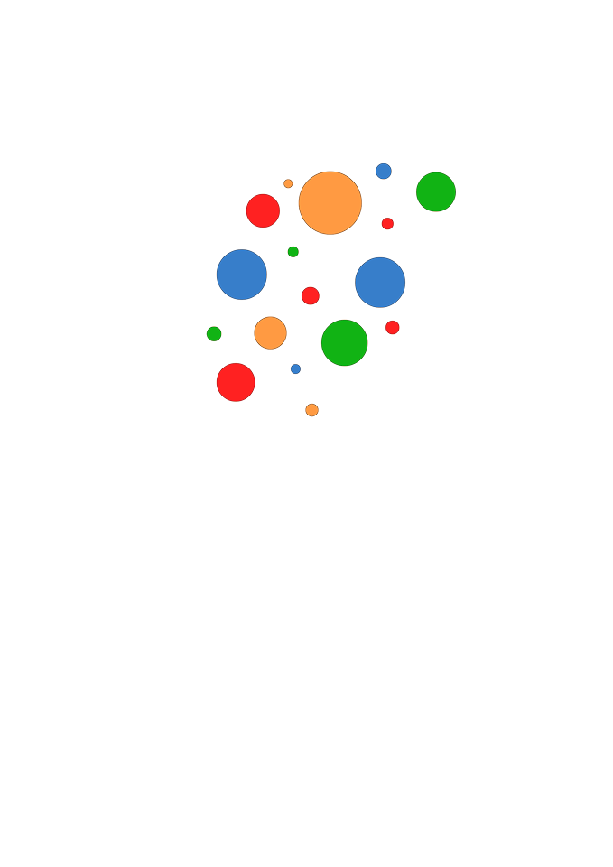
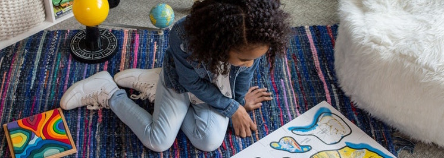
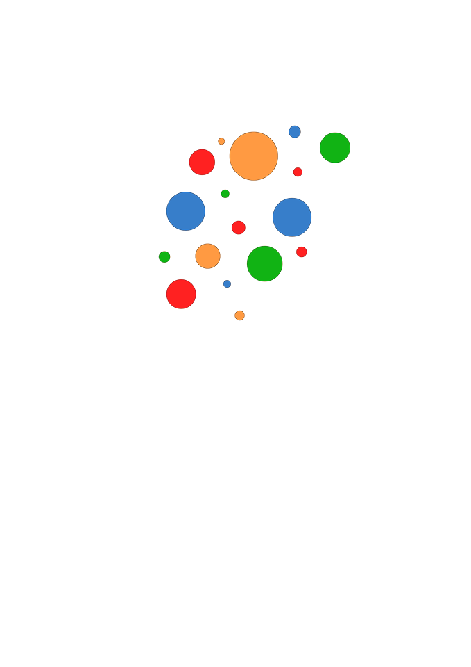
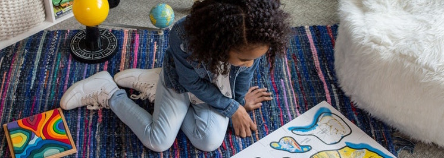

≡
Uddannelse og Job
▼
Ungdomsudd(STU)
Formål og målgruppe
Optagelse
Undervisning samt praktik
Statusmøder
Afslutning af STU
Feriedage og sygdom
Intern/ekstern - arbejdsevneafklaring
Eksternt ervhvervsforløb
Støtte og Aktiviteter
▼
Specialpædagogik/mentor og coach
Dagaktivets tilbud §104
Behandlinger af angst/OCD for personer med ASF
Kurser
Huskurser
Netværksgrupper
Hvad siger folk om netværksgruppen
Særligt tilbud til sårbare kvinder
Rådgivning og behandlinger
▼
Rådgivning
Forældrerådgivning
Støtte og psykolog
Rådgivning/Supervision til fagfolk
Seksualvejledning
På vej til undersøgelse
Specialpædagogisk støtte og vejledning
Udredning
Diagnostisk udredning og afklaring
Psykologisk funktionsudredning
Udredning af sprog og kommunikation
Neuropsykologisk udredning
Henvisning og Priser
Forskning og fagfolk
▼
Nyt fra andre fagfolk
Formål med FUA
Projekter (FUA)
Faglige artikler
National autisme plan
Specifikke målgrupper

Ungdomsuddannelse og STU
Velkommen til vores ungdomsuddannelse (STU) - Lov 564 STU - for normaltbegavede unge i alderen 16-25 år. Center for Autismes ungdomsuddannelse tilbyder en treårig uddannelse for dig (STU - Særligt Tilrettelagt Ungdomsuddannelse under Lov 564). Følg dette link og læs mere om denne type ungdomsuddannelse på hjemmesiden for Ministeriet for Børn og Undervisning Har du spørgsmål til dette tilbud, kan du kontakte: Ann Gjetrang, afdelingsleder: 23 38 38 95 Lene A. Cortzen, afdelingssekretær: 30 70 81 85 1. undervisningsår 2019/2020: tirsdag den 6. august 2019
Ungdomsudd(STU)
Formål og målgruppe
Optagelse
Undervisning samt praktik
Statusmøder
Afslutning af STU
Feriedage og sygdom
Intern/ekstern - arbejdsevneafklaring
Eksternt ervhvervsforløb

 


